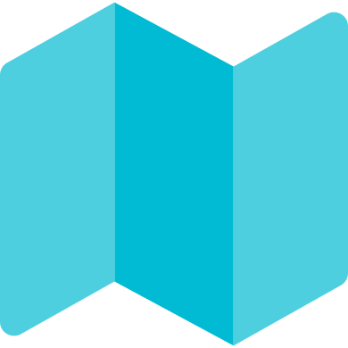
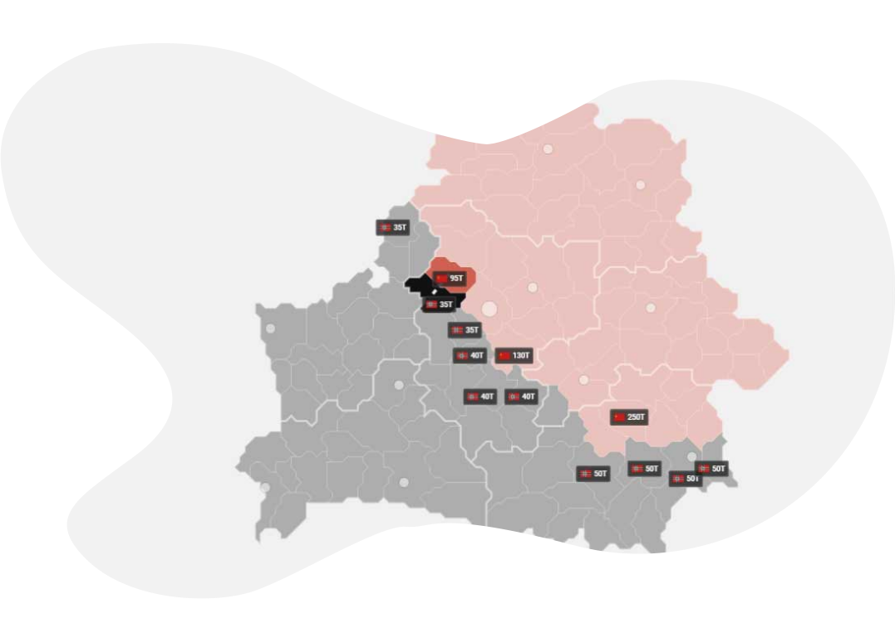

Описание игры

Сервера
Игра создает систему серверов. Сервер - бисистемный фронт двух игроков. На одном сервере находится два игрока, соответственно две страны: СССР (красные территории) и Рейх (тёмные территории). В игре реализована возможность выбора сервера. При подключении к свободному серверу, игра фиксирует геймера и, случайным образом, назначает сторону противостояния: СССР либо Рейх. Интерфейс игры отображает флаг и название страны, количество территорий и игровые меню: технологии, фабрики, экономика и поддержка других стран.

Игровой интерфейс
Действия игры разворачиваются на территориальной карте Беларуси. Очертания районов и областей имеют разметку. На территории районов высвечиваются значки с флагом и цифрами, информирующими о количестве формирований на участке прифронтового района. При отсутствии формирований на участке фронта – значок не отображается. Если формирование есть – появляется значок страны, владеющей этой территорией, отображается численность армии.

Взаимодействия с картой
Выбор, при нажатии на один из районов, сопровождается появлением фронтовой сводки, в которой отображается страна владеющая территорией; количество территорий занятых этой страной; информация о районе (область, название района). В панели «Сводка» расположена «Панель движения». Данное действие позволяет выдвинуть армию фронта в район атаки, либо провести переброску армии в соседний район.
